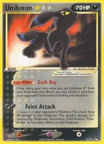

Proyecto personal · Desarrollo web
SoloQ
Una página para seguir las partidas y estadísticas de una comunidad de League of Legends. Incluye rankings, perfiles, historial y un panel de administración.
Ver repositorio¡Hola! 👋
Estudio Ingeniería Civil en Computación e Informática en la Universidad de los Andes. Me gusta programar, entender cómo funcionan las cosas y crear proyectos relacionados con lo que disfruto, como los videojuegos.
Santiago, Chile · Universidad de los Andes
01 / Proyectos
Una web para una comunidad de League of Legends y experimentos para mi tesis. Bastante distintos, pero ambos me han enseñado mucho.
Proyecto personal · Desarrollo web
Una página para seguir las partidas y estadísticas de una comunidad de League of Legends. Incluye rankings, perfiles, historial y un panel de administración.
Ver repositorioProyecto de tesis · Python
Experimentos sobre cómo reconstruir imágenes de tomografía. Comparé filtros, añadí ruido a sinogramas y revisé las diferencias entre calcular la transformada de Fourier de forma directa y con FFT.
Ver repositorioTambién he trabajado en estos proyectos de la universidad y de comunidades en las que participo.
Sitio para una comunidad universitaria de esports, con torneos, equipos, noticias y gestión de contenido.
Ver repositorioProyecto de arquitectura de software desarrollado en cuatro entregas. Incluye una aplicación de reseñas, contenedores, caché, búsqueda y Traefik.
Herramienta universitaria para analizar documentos académicos, encontrar evidencias y visualizar competencias.
Ver repositorioRecolección y preparación de titulares de prensa nacional e internacional para su análisis y clasificación.
Ver repositorio02 / Herramientas
Herramientas que he utilizado en proyectos personales y trabajos de la universidad.
Next.js · React · TypeScript · JavaScript · Ruby on Rails · FastAPI
PostgreSQL · SQL · Drizzle · Redis · OpenSearch
Git · GitHub · Docker Compose · Kubernetes · Traefik · Vercel
Python · NumPy · Pandas · Procesamiento de imágenes · Fourier · FBP
03 / Fuera del código
Paso bastante tiempo frente al computador, pero no todo es código.
Mi tiempo libre
Juego League of Legends y otros videojuegos. De ahí también salió la idea de crear SoloQ.

Coleccionar
Me gustan las cartas coleccionables, especialmente Pokémon, y descubrir otros juegos de cartas.
Ver algo bueno
Siempre hay alguna serie o anime que tengo pendiente por ver.
Desconectar un rato
Me gusta entrenar, tanto fuerza como cardio, y despejarme un poco.
04 / Sobre mí
Entré a la universidad en 2022. Con el tiempo descubrí que me gusta tanto desarrollar aplicaciones como entender la teoría detrás de los problemas. Este sitio es una forma de compartir lo que voy haciendo.
Si te interesa alguno de mis proyectos, puedes revisar el código en GitHub.
Explora mi GitHub